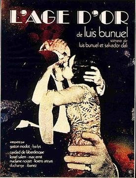

Luis Buñuel
1930
60 minutes
Sometimes you just want to watch a film that feels like a sixty-minute version of the fake surrealist films they would show on SNL on the "Sprockets" East German television sketch. This film scratches that itch. It reminds you of every artsy dive bar you've ever been in that ran surrealist films in the background while you would toss back cheap cans of PBR or Narragansett or Natty Boh or Labatt's Blue or whatever the cheap local brand might be. It reminds you of The Bovine Sex Club, where you saw your first Herzog film (Even Dwarfs Started Small, courtesy of Suspect Video across the street). It reminds you of Club Charles. It reminds you of The Crown. It reminds you of The Cactus Club. It even reminds you of The Paradise, even though they didn't have televisions. Their irregular regulars provided enough surreal imagery and horror without Dali-inspired assistance.
You find the scorpion documentary material at the beginning quite interesting. You worked with two Tunisian guys who would talk about finding scorpions around (which they considered a slightly-dangerous nuisance pest) near their homes. They would dig a small hole for the scorpions and provoke them to fight to the death for sport. Your other co-workers considered this to be horrific and cruel, but they shrugged it off, saying it was better than just killing them. They'd let the winner go and let the world be blessed with one less scorpion, while letting the little beasts still behave within their nature. It's not something you'd participate in yourself, but at least their logic and intentions, if somewhat alien, seemed sound.
Time to choose something different: